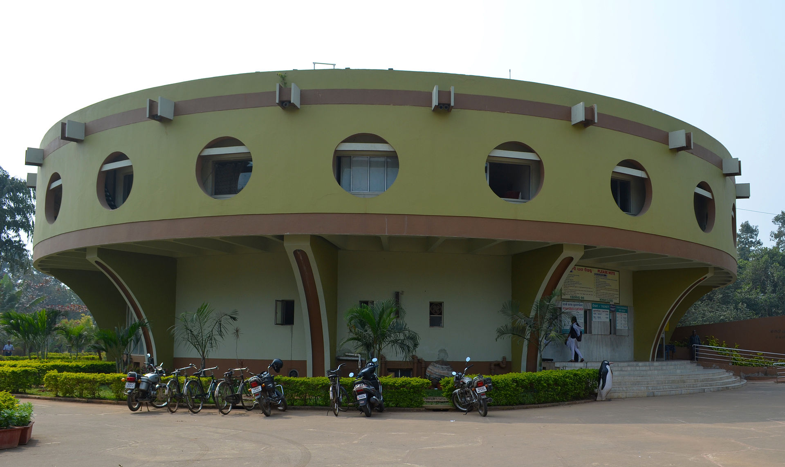

Pathani Samanta Planetarium is a planetarium named after astronomer Pathani Samanta. It was founded on 2017 for creating awareness about astronomy. It carries on activities like night sky viewing, audio visual programs and poster shows. It also displays various astronomical devices. The planetarium was established by Science and Technology Department, Government of Odisha.
